Weather forecasting is the application of science and technology to predict the conditions of the atmosphere for a given location and time. People have attempted to predict the weather informally for millennia and formally since the 19th century. Weather forecasts are made by collecting quantitative data about the current state of the atmosphere, land, and ocean and using meteorology to project how the atmosphere will change at a given place.